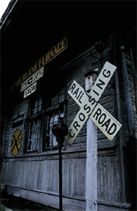
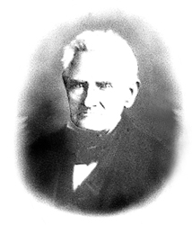

History Of Dickson County

Dickson County was created by an act of the Tennessee General Assembly,
meeting in Knoxville, on November 3, 1803, from portions of Robertson
and Montgomery counties. This new county was named for Dr. William
Dickson, a Nashville physician, who also served as Speaker of the
Tennessee House of Representatives and as a U. S. Congressman. Dickson
County was organized as the 25th of the of Tennessee's 95 counties.
The
fertile soils and abundance of natural resources drew settlers to
this area of the Western Highland Rim in the early 1790's. North Carolina
Revolutionary War and Tennessee land grants assured large tracts of
land at little of no cost to these pioneers. The discovery of iron
ore provided the foundation for the area's first industrial development.
James Robertson,"Father of Tennessee" discovered the first
iron ore veins in Cumberland Furnace and established the first iron
works in middle Tennessee.
On August
4, 1804, an act of the Tennessee General Assembly created the Town
of Charlotte to serve as "The Seat of Dickson County Government."
The county seat is named for Robertson's wife Charlotte. The Town
of Charlotte was the center of commerce, industry and government until
the advent of the Civil War. With the completion of the railroad from
Nashville to the
Tennessee River at the end of the War, the focus shifted to the southern
end of the county. Industry and commerce followed the rail lines leaving
agriculture, the iron industry and county government as the mainstays
of its northen section.
Throughout it's 200 year history, Dickson County has produced many
notable citizens who have significantly contributed to the development
and a quality of life style on regional and state levels including
a three-term governor, congressmen, state legislators, a Tennessee
Supreme Court justice, a noted Tennessee historian, iron masters,
as well as industrial, business leaders, and local residents.
Researched
and compiled by:
Linda Parker, Dickson County Archivist
Sherry Kilgore, Historian

Although Charlotte is the County Seat, Dickson is the county’s largest
city. The county’s 2000 population was 43,156; its six incorporated
communities include Burns (1,366), Charlotte
(1,153), Dickson (12,244), Slayden
(138) and Vanleer (288) and White
Bluff (2,142). Each of these towns contributed to the success
of the county.
A comprehensive history of Dickson County may be found in, A
Brief History Of Dickson County, Tennessee “200 Years of Pride, Promise
and Progress” by Rick Hollis. ( * PDF
format, 1.56 Mb)
* NOTE: To view this document, you will
need to have the Adobe Acrobat Reader installed on your computer.
If you do not have the Adobe Acrobat Reader installed, please click
the button to the left for a free copy.
|